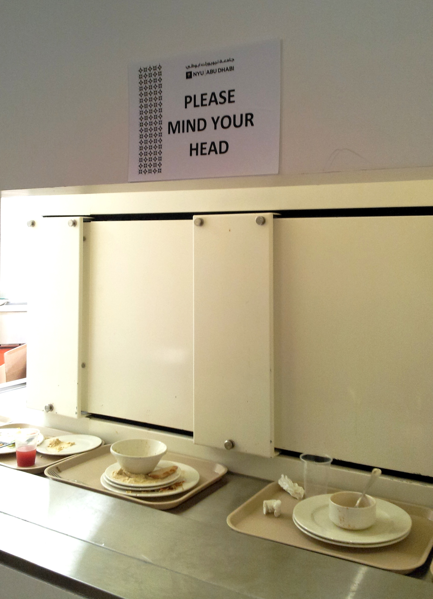
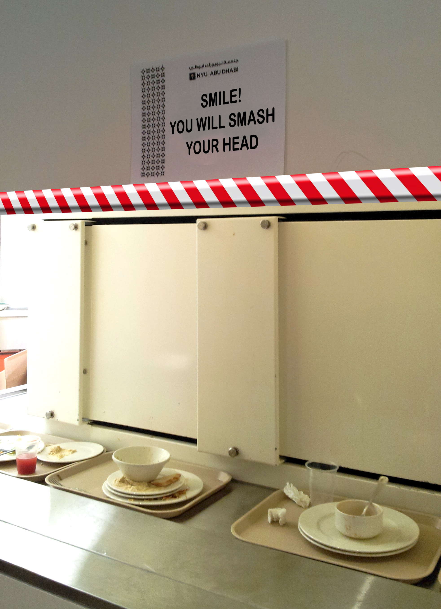

Remedial design is rarely something to be proud of, as it is often the evidence of a faulty feature. In the photo above you see the clearing station in the nyuad campus’ cafeteria: you are invited to leave your tray on the belt to facilitate the cleaners’ job, and so you lean to place it properly and Bang! You hit your head on the light colored wall. This annoying thing has being going on for a while and now a sign has appeared, politely begging users to mind their head. That, of course, is not the solution. Accidents are occurring not because we do not mind our head; we are not talking about the gap between the train and the platform on the London Underground, a sometimes inevitable problem which has been addressed in many ways, including ubiquitous signs and repeated mantra-like voice-over messages; here we are talking about shabby interior design. The solution to bad design is good design and nothing else. The tray belt must run closer to the window in the wall. Or the window must be bigger. Or a new solution must be implemented altogether. If we really were to be content with remedial design, then we could suggest protective foam panels and a rewording of the sign because people will continue to hit their head.
Design (bad or good) is more powerful than any warning.
Luckily we have chosen a different approach and this feature, after having been scrutinized by the students of the Wayfinding class has gone. The low tech solutions of movable piles of tray proved to be way more practical.
 Abu Dhabi, UAE. Image credit: GP.